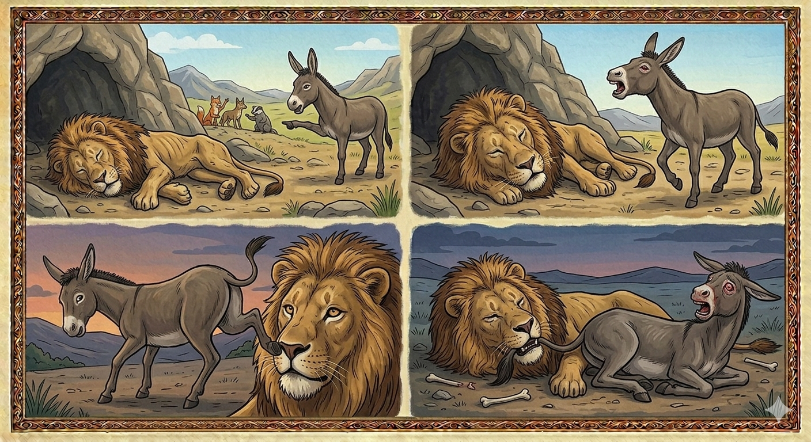

И.А. Дахкильгов. Хьехаме дувцарш - поучительные рассказы-притчи.
И.А. Дахкильгов. Хьехаме дувцарш - поучительные рассказы-притчи. Из ингушского фольклора.

Вира хиннар
Лом къаденна хинад. Ше уллачул хьалгӀорттал гӀоарал хиннадац цун. Деррига оакхарой, лома гарга даха шоаш духьаш хинна деце а, лом бегдоахаш хиннад. Из хабар хеза вир а денад лом долча. Массане а лом сийдоацача доаккхаш ма латтий, аьнна, виро а лаьрхӀад из да. Ши бӀарг бужабаьча, цхьаккхача хӀаманца уйла йоацаш, уллаш хиннад лом. Вир геттар михьарадаьннад. Сов майрадаьннача цунна дагаэттад лома чӀинг бе. Лома дӀахьалха а даьнна, цунгахьа букъа а берзабаь, ши мӀарг тоха кийчаденнад вир. Циггач ши бӀарг хьалекхача лома бӀаргадейнад ший мера кӀала лесташ дола виран цӀог. Корта хьалъэйбаь, ломо ший багенца виран цӀог лаьцад, Ӏокатехад. Вир кӀагора дахад. ХӀаьта циггач лома са хаьдад. Цхьаккха вихьавац цун багара виран цӀог даккха. Циггач Ӏеха а Ӏехаш, массехкача денна илла вир, тӀеххьара са а хаьда, дӀадаьннад. Леш улле а лом лом долга ха доагӀар вирана.
РУССКИЙ
Что случилось с ослом
Состарился лев настолько, что уже не мог подняться с места. Все звери, хотя они и боялись близко подойти ко льву, издали оскорбляли и вышучивали его. Все это прослышал осел и тоже решил поиздеваться над львом. Осел ходил вокруг льва, поносил его последними словами. Однако лев лежал неподвижно, с закрытыми глазами. Раззадорился осел и решил брыкнуть льва. Задом осел вплотную подошел к его морде, пригнулся, готовясь брыкнуть. В это время лев приоткрыл глаза и увидел перед своим носом ослиный хвост. Недолго думая, он схватил его своей пастью и дернул вниз. Осел свалился, а лев тут же сдох. Никто из зверей не осмелился подойти ко льву. Осел не смог освободиться из его сведенных челюстей. Несколько дней осел орал во все горло, затем околел. Ослу надо было знать, что лев, он и есть лев, даже издыхающий.
ENGLISH
What happened to the donkey
The lion had grown so old that he could no longer get up. Although they were afraid to approach him, all the animals insulted and mocked the lion from a distance. The donkey heard this and decided to mock the lion, too. He walked around the lion, hurling the worst insults at him. However, the lion lay motionless with his eyes closed. The donkey became angry and decided to kick the lion. He moved his hindquarters right up to the lion’s muzzle, crouched down and prepared to kick. At that moment, the lion opened his eyes slightly and saw the donkey’s tail right in front of his nose. Without hesitating for a moment, he seized it in his jaws and pulled it downwards. The donkey fell over and died on the spot. None of the other animals dared to approach the lion. The donkey could not free himself from the lion's clamped jaws. He brayed at the top of his voice for several days, and then he died too. He should have known that a lion is a lion, even when dying.
НОХЧИЙН
Виран хилларг
Лом къанделла хилла. Ша Ӏуьллачул хьалгӀаттал гӀора хилла дац цуьнан. Йерриге акхарой, лоьмана герга йаха шаьш йаьхьаш хилла йацахь а, лоьмах бегаш беш хилла. И хабар хезна вир а йеъна лом долче. Массо а лом сийдоцуче доккхуш ма лаьттий, аьлла, виро а сацам бина иза дан. Ши бӀаьрг дӀакъевлина, цхьанне хӀуманца ойла йоцуш, Ӏуьллуш хилла лом. Вир гуттар карзахйаьлла. Сов майрадаьллачу цунна дагадеан лоьмана цӀингаш тоха. Лоьмана дӀахьалха а даьлла, цуьнгахьа букъ а берзийна, ши мийр тоха кечйелла вир. Циггахь ши бӀаьрг схьабиллина лоьмана гина шен мерак кӀел лесташ долу виран цӀога. Корта хьалаайбина, лоьмо шен баганца виран цӀога лаьцна, катоьхна. Вир аркъал йоьжна. ХӀета циггахь лоьман са хаьдда. Цхьа а ваьхьна вац цуьнан багар виран цӀога даккха. Циггехь Ӏеха а Ӏехаш, массех дийнахь Ӏиллина вир, тӀеххьара са а хаьдда, дӀайаьлла. Леш Ӏуьлле а лом лом долий хаа дагӀар вирана.
ПОГОВОРКИ